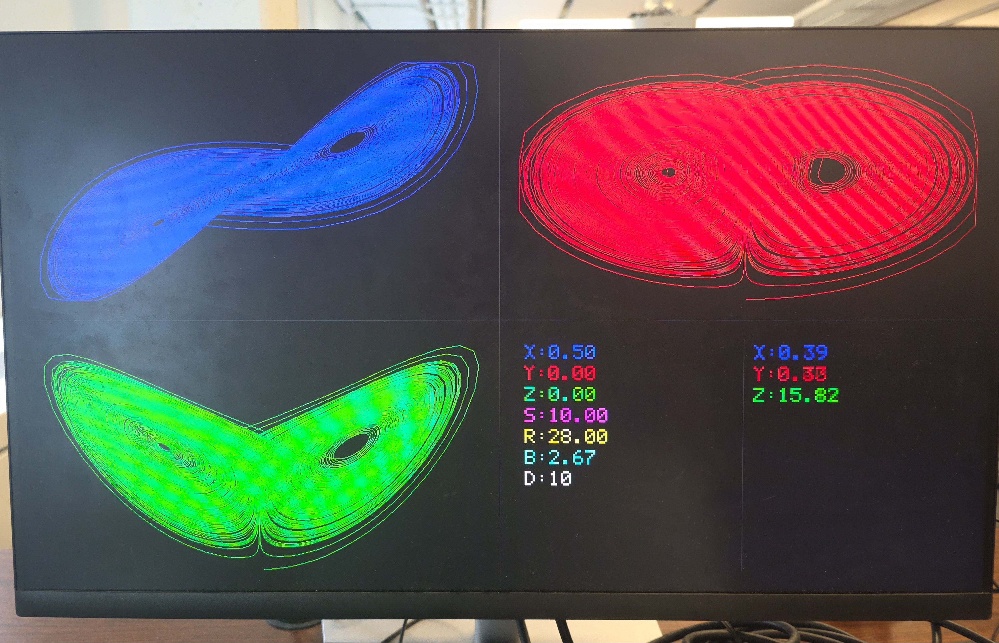
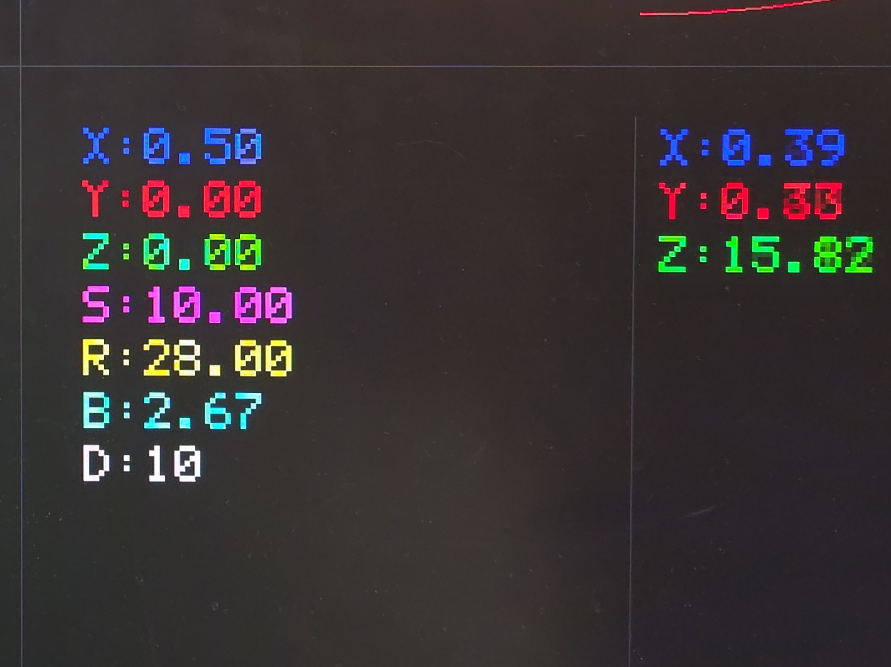

Plotter and demo application
Software drawing into the VDMA frame buffer, the four-quadrant screen and the UART controls.
08.1Framebuffer basics
- Four 1920×1080×3-byte frame buffers in DDR (
DISPLAY_NUM_FRAMES= 4, aligned 0x20); the VDMA scans the current one out through HP0. - Pixel = 3 bytes, order R, B, G; address =
x*3 + y*stride, stride = 1920*3. - After drawing, flush the D-cache for the frame (whole frame in the working build) so the VDMA reads fresh pixels.
The plot is drawn by the CPU; the PL only supplies numbers. The video path is the stock Digilent one.
addr = ((plot->xOrigin + x) * 3) + ((plot->yOrigin + y) * stride);
frame[addr] = red;
frame[addr + 1] = blue; /* second byte */
frame[addr + 2] = green; /* third byte */
/* frame buffers (video_demo.h): */
#define DEMO_MAX_FRAME (1920*1080*3)
#define DEMO_STRIDE (1920 * 3)
/* after drawing, push pixels out of the D-cache so the VDMA scans fresh data: */
Xil_DCacheFlushRange((unsigned int) pFrames[dispCtrl.curFrame], DEMO_MAX_FRAME);08.2Phase-plane plot
PhasePlot= screen rectangle + axis ranges + colour + last pixel. Points accumulate (no erase) so the attractor builds up.- Value → pixel (clamped to the axis range, vertical flipped); consecutive points joined by a Bresenham line.
- A jump larger than half the box (a reload, or a big legitimate move) is drawn as a 2×2 dot instead of a streak.
Line drawing makes the trace continuous even when only every 16th solver step is plotted.
static void PhasePlot_AddPoint(u8 *frame, u32 stride, PhasePlot *plot,
float hVal, float vVal)
{
float th, tv;
int px, py, dx, dy;
th = (hVal - plot->minH) / (plot->maxH - plot->minH);
if (th < 0.0f) th = 0.0f;
if (th > 1.0f) th = 1.0f;
tv = (vVal - plot->minV) / (plot->maxV - plot->minV);
if (tv < 0.0f) tv = 0.0f;
if (tv > 1.0f) tv = 1.0f;
px = (int) (th * (plot->width - 1));
py = (int) (plot->height - 1) - (int) (tv * (plot->height - 1));
if (plot->hasLast)
{
dx = (px > plot->lastPx) ? (px - plot->lastPx) : (plot->lastPx - px);
dy = (py > plot->lastPy) ? (py - plot->lastPy) : (plot->lastPy - py);
/* A jump over half the plot means we straddled a LorenzDDA_Load() reset (or, since steps are batched, is just a big-but-legitimate move) - draw a fresh dot instead of a long streak. */
if (dx > (int) (plot->width / 2) || dy > (int) (plot->height / 2))
{
PhasePlot_DrawDot(frame, stride, plot, px, py);
}
else
{
PhasePlot_DrawLine(frame, stride,
(int) plot->xOrigin + plot->lastPx, (int) plot->yOrigin + plot->lastPy,
(int) plot->xOrigin + px, (int) plot->yOrigin + py,
plot->red, plot->blue, plot->green);
}
}
else
{
PhasePlot_DrawDot(frame, stride, plot, px, py);
}
plot->lastPx = px;
plot->lastPy = py;
plot->hasLast = 1;
}08.3Four-quadrant 1920×1080 screen
- XY top-left, YZ top-right, XZ bottom-left, parameter panel bottom-right; each quadrant 960×540 with a 40 px margin; dim divider cross.
- Axis ranges: X ±20, Y ±25 (XY) / ±25 (YZ), Z 0-50 — the classic σ=10, ρ=28, β=8/3 envelope.
- Panel: left column = init values (X0,Y0,Z0,S,R,B,D, drawn once); right column = live X,Y,Z redrawn every update. 5×7 bitmap font drawn at scale 4.
One screen shows all three projections plus the numbers, so no terminal is needed to read state.
/* Four-quadrant 1920x1080 layout: XY top-left, YZ top-right, XZ bottom-left, parameter panel bottom-right, each quadrant 960x540 with a 40px margin, separated by a thin divider cross. */
#define SCREEN_W 1920
#define SCREEN_H 1080
#define QUAD_W (SCREEN_W / 2) /* 960 */
#define QUAD_H (SCREEN_H / 2) /* 540 */
#define QUAD_MARGIN 40
#define PLOT_W (QUAD_W - 2 * QUAD_MARGIN) /* 880 */
#define PLOT_H (QUAD_H - 2 * QUAD_MARGIN) /* 460 */
#define PANEL_X (QUAD_W + QUAD_MARGIN) /* 1000 */
#define PANEL_Y (QUAD_H + QUAD_MARGIN) /* 580 */
#define PANEL_W PLOT_W
#define PANEL_H PLOT_H
#define PANEL_TEXT_SCALE 4
#define PANEL_LINE_PITCH 42
#define PANEL_LINE_Y(i) (PANEL_Y + 10 + (i) * PANEL_LINE_PITCH)
#define PANEL_LABEL_CHARS 2 /* e.g. "X:" */
/* Left column: init/config values (x0,y0,z0,sigma,rho,beta,dt), drawn once. Right column: live current x/y/z, redrawn every frame - rows 0-2 line up with the left column's X/Y/Z rows. */
#define PANEL_MID_X (PANEL_X + PANEL_W / 2)
#define PANEL_LEFT_X (PANEL_X + 10)
#define PANEL_RIGHT_X (PANEL_MID_X + 20)
#define PANEL_LEFT_NUM_X (PANEL_LEFT_X + PANEL_LABEL_CHARS * (5 + 1) * PANEL_TEXT_SCALE)
#define PANEL_RIGHT_NUM_X (PANEL_RIGHT_X + PANEL_LABEL_CHARS * (5 + 1) * PANEL_TEXT_SCALE)
#define DIVIDER_GRAY 60void LorenzDDAPlot_Init(void)
{
/* X, Y ranges follow the classic attractor envelope for sigma=10, rho=28, beta=8/3; Z runs roughly 0-50. */
PhasePlot_Init(&plotXY, QUAD_MARGIN, QUAD_MARGIN, PLOT_W, PLOT_H,
-20.0f, 20.0f, -25.0f, 25.0f, 255, 0, 0); /* X-Y, red */
PhasePlot_Init(&plotYZ, QUAD_W + QUAD_MARGIN, QUAD_MARGIN, PLOT_W, PLOT_H,
-25.0f, 25.0f, 0.0f, 50.0f, 0, 0, 255); /* Y-Z, green */
PhasePlot_Init(&plotXZ, QUAD_MARGIN, QUAD_H + QUAD_MARGIN, PLOT_W, PLOT_H,
-20.0f, 20.0f, 0.0f, 50.0f, 0, 255, 0); /* X-Z, blue */
}

08.4One update: 16 solver steps per plotted point
LorenzDDAPlot_Update: 16×Step, oneReadState, add a point to the three plots, redraw live X/Y/Z.
A single tiny Euler step per point made the trace crawl; batching costs 16 cheap AXI pulses but only one redraw.
/* Hardware steps performed per displayed point - batched so the trace doesn't crawl one tiny Euler step at a time, without touching dtShift or the PS-side redraw cadence. */
#define LORENZ_DDA_STEPS_PER_UPDATE 16u
void LorenzDDAPlot_Update(u8 *frame, u32 stride, u32 baseAddr)
{
float x, y, z;
u32 i;
for (i = 0; i < LORENZ_DDA_STEPS_PER_UPDATE; i++)
LorenzDDA_Step(baseAddr);
LorenzDDA_ReadState(baseAddr, &x, &y, &z);
PhasePlot_AddPoint(frame, stride, &plotXY, x, y);
PhasePlot_AddPoint(frame, stride, &plotYZ, y, z);
PhasePlot_AddPoint(frame, stride, &plotXZ, x, z);
DrawCurrentValues(frame, stride, x, y, z);
}08.5Hook into video_demo.c
- Stock
video_demo.cwas cut down to the HDMI-out path: no test patterns, no resolution menu, no capture, no interrupts (the RX/capture sources are still insrc/but not called). - Lorenz code is compiled only if the BSP defines
XPAR_LORENZ_DDA_DRIVER_0_S00_AXI_BASEADDR; otherwise the app prints a hint and only waits forq.
The guard lets the project build before the hardware is exported — and is why a stale BSP fails silently (I-06).
/* Needs XPAR_LORENZ_DDA_DRIVER_0_S00_AXI_BASEADDR in xparameters.h - edit both lines below if your IP instance is named differently, or re-export hardware from Vivado if it's missing entirely. */
#ifdef XPAR_LORENZ_DDA_DRIVER_0_S00_AXI_BASEADDR /* <-- EDIT: replace with your macro */
#define HAVE_LORENZ_DDA
#define LORENZ_DDA_BASEADDR XPAR_LORENZ_DDA_DRIVER_0_S00_AXI_BASEADDR /* <-- EDIT: replace with your macro */
#endif
/* ============================================================== */08.6Start-up and main loop
DemoInitialize: timer, VDMA,DisplayInitialize/Start(stock 640×480), thenDisplayStop → DisplaySetMode(VMODE_1920x1080) → DisplayStart. Frame buffers are zero (BSS), so the screen starts black.DemoRun: init plots and panel, write default parameters,Load, print the key menu, then loop: update+flush, delay, poll UART.- Defaults in the committed source: x0=0.5, y0=0, z0=0, σ=10, ρ=25, β=2, dt shift=10, delay 6000 µs.
The loop is polled (no interrupts) — simplest thing that works and keeps the stock display driver untouched.
void DemoInitialize()
{
int Status;
XAxiVdma_Config *vdmaConfig;
int i;
/* Initialize an array of pointers to the 3 frame buffers */
for (i = 0; i < DISPLAY_NUM_FRAMES; i++)
{
pFrames[i] = frameBuf[i];
}
/* Initialize a timer used for a simple delay */
TimerInitialize(SCU_TIMER_ID);
/* Initialize VDMA driver */
vdmaConfig = XAxiVdma_LookupConfig(VDMA_ID);
if (!vdmaConfig)
{
xil_printf("No video DMA found for ID %d\r\n", VDMA_ID);
return;
}
Status = XAxiVdma_CfgInitialize(&vdma, vdmaConfig, vdmaConfig->BaseAddress);
if (Status != XST_SUCCESS)
{
xil_printf("VDMA Configuration Initialization failed %d\r\n", Status);
return;
}
/* Initialize the Display controller and start it */
Status = DisplayInitialize(&dispCtrl, &vdma, HDMI_OUT_VTC_ID, DYNCLK_BASEADDR, pFrames, DEMO_STRIDE);
if (Status != XST_SUCCESS)
{
xil_printf("Display Ctrl initialization failed during demo initialization%d\r\n", Status);
return;
}
Status = DisplayStart(&dispCtrl);
if (Status != XST_SUCCESS)
{
xil_printf("Couldn't start display during demo initialization%d\r\n", Status);
return;
}
/* DisplayInitialize() defaults to 640x480 - switch up to 1920x1080 for real screen real estate. */
DisplayStop(&dispCtrl);
DisplaySetMode(&dispCtrl, &VMODE_1920x1080);
Status = DisplayStart(&dispCtrl);
if (Status != XST_SUCCESS)
{
xil_printf("Couldn't switch display to 1920x1080 %d\r\n", Status);
return;
}
/* Framebuffers start zeroed (BSS) and no test pattern is drawn, so the screen starts black - LorenzDDAPlot_ClearAll() in DemoRun() draws the chrome. */
return;
}void DemoRun()
{
char userInput = 0;
#ifdef HAVE_LORENZ_DDA
/* PS-side delay between displayed points (no HW speed divider); 6000us is 5x the original 30000us default. */
u32 stepDelayUs = 6000u;
u8 paused = 0;
/* Current Lorenz parameters (classic sigma=10, rho=28, beta=8/3); dtShift is a raw HW shift count, not Q6.20 - kept as vars so 's' can show/update them. */
float x0 = 0.5f, y0 = 0.0f, z0 = 0.0f;
float sigma = 10.0f, rho = 25.0f, beta = 2.0f;
u32 dtShift = 10u;
#endif
/* Flush UART FIFO */
while (XUartPs_IsReceiveData(UART_BASEADDR))
{
XUartPs_ReadReg(UART_BASEADDR, XUARTPS_FIFO_OFFSET);
}
#ifdef HAVE_LORENZ_DDA
LorenzDDAPlot_Init();
LorenzDDAPlot_ClearAll(pFrames[dispCtrl.curFrame], DEMO_STRIDE);
LorenzDDA_SetParams(LORENZ_DDA_BASEADDR, x0, y0, z0, sigma, rho, beta, dtShift);
LorenzDDA_Load(LORENZ_DDA_BASEADDR);
LorenzDDAPlot_ShowInitValues(pFrames[dispCtrl.curFrame], DEMO_STRIDE, x0, y0, z0, sigma, rho, beta, dtShift);
Xil_DCacheFlushRange((unsigned int) pFrames[dispCtrl.curFrame], DEMO_MAX_FRAME);
DemoPrintMenu();
while (userInput != 'q')
{
while (!XUartPs_IsReceiveData(UART_BASEADDR))
{
if (!paused)
{
LorenzDDAPlot_Update(pFrames[dispCtrl.curFrame], DEMO_STRIDE, LORENZ_DDA_BASEADDR);
Xil_DCacheFlushRange((unsigned int) pFrames[dispCtrl.curFrame], DEMO_MAX_FRAME);
}
TimerDelay(stepDelayUs);
}
userInput = XUartPs_ReadReg(UART_BASEADDR, XUARTPS_FIFO_OFFSET);
xil_printf("%c", userInput);
switch (userInput)
{
case '+':
/* Halve the delay (2x speed), floored at 100us. */
if (stepDelayUs > 1u)
stepDelayUs /= 2;
xil_printf("\n\rStep delay: %lu us\n\r", (unsigned long) stepDelayUs);
break;
case '-':
/* Double the delay (0.5x speed), capped at ~1s. */
if (stepDelayUs < 1000000u)
stepDelayUs *= 2;
xil_printf("\n\rStep delay: %lu us\n\r", (unsigned long) stepDelayUs);
break;
case 'p':
case 'P':
paused = !paused;
xil_printf("\n\r%s\n\r", paused ? "Paused - 'p' resumes" : "Resumed");
break;
case 'i':
case 'I':
LorenzDDA_Load(LORENZ_DDA_BASEADDR);
LorenzDDAPlot_ClearAll(pFrames[dispCtrl.curFrame], DEMO_STRIDE);
LorenzDDAPlot_ShowInitValues(pFrames[dispCtrl.curFrame], DEMO_STRIDE, x0, y0, z0, sigma, rho, beta, dtShift);
Xil_DCacheFlushRange((unsigned int) pFrames[dispCtrl.curFrame], DEMO_MAX_FRAME);
xil_printf("\n\rReloaded initial conditions\n\r");
break;
case 's':
case 'S':
xil_printf("\n\rSet Lorenz parameters (Enter keeps the current value shown in brackets):\n\r");
x0 = DemoPromptFloat("x0", x0);
y0 = DemoPromptFloat("y0", y0);
z0 = DemoPromptFloat("z0", z0);
sigma = DemoPromptFloat("sigma", sigma);
rho = DemoPromptFloat("rho", rho);
beta = DemoPromptFloat("beta", beta);
dtShift = DemoPromptUInt("dt (raw shift count, larger = slower/more stable)", dtShift);
LorenzDDA_SetParams(LORENZ_DDA_BASEADDR, x0, y0, z0, sigma, rho, beta, dtShift);
LorenzDDA_Load(LORENZ_DDA_BASEADDR);
LorenzDDAPlot_ClearAll(pFrames[dispCtrl.curFrame], DEMO_STRIDE);
LorenzDDAPlot_ShowInitValues(pFrames[dispCtrl.curFrame], DEMO_STRIDE, x0, y0, z0, sigma, rho, beta, dtShift);
Xil_DCacheFlushRange((unsigned int) pFrames[dispCtrl.curFrame], DEMO_MAX_FRAME);
xil_printf("\n\rParameters updated, trace reloaded\n\r");
break;
case 'q':
break;
default:
xil_printf("\n\rInvalid selection\n\r");
}
}08.7UART keys and the s command
- Keys:
+/-speed up/down,ppause/resume,ireload initial conditions,sset x0,y0,z0,σ,ρ,β,dt (Enter keeps the shown value),qquit. sreads whole lines with a small echoing line editor. Floats are formatted withsnprintfand printed withxil_printf.
xil_printf has no %f; the first version used printf and the prompts never appeared.
static float DemoPromptFloat(const char *label, float current)
{
char buf[32];
char valBuf[16];
/* xil_printf has no %f, and printf's buffering can swallow output with no trailing '\n' - so format via snprintf (proven to work) and print via xil_printf. */
snprintf(valBuf, sizeof(valBuf), "%.4f", current);
xil_printf("%s [%s]: ", label, valBuf);
DemoReadLine(buf, sizeof(buf));
if (buf[0] == '\0')
return current;
return (float) atof(buf);
}
Known cosmetic bug visible in this capture: the 'Step delay' value printed after +/- is garbage (e.g. 12888659988524 us). Suspected cause: %lu in xil_printf (not verified); the delay variable itself is a 32-bit value.
Related: Issue I-14
08.8Colour order
- Framebuffer bytes are (red, blue, green), so the helper's argument order is
(red, blue, green). YZ and XZ colours were swapped relative to their labels; fixed so YZ is green and XZ is blue.
Easy to miss because the code compiled and drew fine.
Related: Issue I-15
08.9Speed and layout tuning
- First run: plot worked but frames looked clipped and the trace crawled. Boxes enlarged, 16 steps per point, default delay lowered 30 ms → 6 ms;
+/-halve/double the delay (floor 100 µs, cap ~1 s). - A dirty-rectangle flush was tried to avoid flushing 6.2 MB per point; it did not work as intended and was dropped on purpose. The whole-frame flush stays and the speed is good enough.
Whole-frame flush is the simplest correct behaviour; the speed goal was already met by batching steps.
Figure (text only). First run: the traces looked cut off at the plot-box edge; the boxes were then enlarged.
Related: Issue I-16
← 07 PS driver · 09 Run, SD boot, repo →
docs-site/figures/ (see its README).